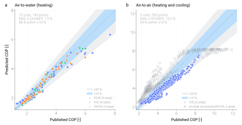
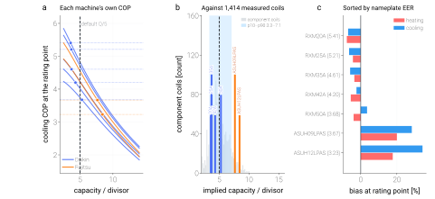

Validation¶
A physics-based model is only useful if its first-principles answers land close to the real machines it is meant to describe. This page is that check.
The harder question is whether it keeps landing close when the machine changes. A model tuned to one unit will match that unit; what tells you something is whether the same defaults, unchanged, follow a different refrigerant, a different size, and a different equipment architecture.
How to read these numbers
Nothing here is fitted to anything here. Every unit is run with the library defaults exactly as shipped. The only per-unit inputs are values the manufacturer publishes about the machine itself — nameplate capacity, refrigerant, and, where the manufacturer publishes them at all, compressor displacement and rated air flow. Those have the same status as the nameplate: specification, not tuning. Where the evidence for a default came from is a separate page, Where the defaults come from.
Points the model could not evaluate are reported, not dropped. The
counts below distinguish points attempted from points evaluated, and the
interactive table shows each unevaluated point with its reason. A point at
which the model runs but delivers more than 1 % less than the published
duty (a capacity ceiling) is not scored either, with the reason
capacity_short: its COP belongs to a different operating point. The
same holds at the other end: a published duty below the smallest one the
model runs continuously is reported as the mean of on/off cycling
(capacity_clamped == "min"), which is not what a catalogue row is, and
is left out with the reason cycling_mean. No point of the present
catalogues is in that case.
Parity¶


Predicted against published COP. Colour is refrigerant, marker size is nominal capacity. A model quietly tuned to one unit would show one tight cluster on the diagonal and the rest scattered. The statistics on each panel are those of the adopted units; the two units on hold are drawn as hollow grey rings and not scored.¶
Dimension |
Span |
|---|---|
Families |
Air-to-water ( |
Refrigerants |
R32, R410A, R290 |
Nominal capacity |
2.0 – 16.0 kW, a factor of eight |
Manufacturers |
Panasonic, Samsung, Daikin, Fujitsu |
Points |
757 attempted, 749 evaluated |
Modes |
Heating and cooling |
Source temperature |
−15 to +46.1 °C (adopted units −15 to +40 °C) |
Sink temperature |
15 to 65 °C leaving water / indoor dry bulb |
Per-unit results¶
Sort by any column, filter by unit, refrigerant or mode. The numbers come from
validation/results/, which the parity harness writes.
Reading the residuals¶
There is no single headline number: the two families answer different
questions, and the set mixes rating standards (EN 14511 and AHRI 210/240) that
define COP differently, so each family is reported on its own and nothing is
pooled across standards. The two held catalogues are run and written but never
enter a headline. The compressor efficiencies are the shipped
ossorio-r290-te-2026-11-21 maps (Where the defaults come from), the same for every
unit, applied unchanged, inside the compressor operating envelope
(Reference points and operating limits). Three properties of those
maps are read with every figure below:
They are one compressor’s. The maps are fitted to 134 measured points of one 46 cm³/rev R290 scroll. Every unit runs on them, whatever its refrigerant and its compressor: the rotary and swing compressors of the set as much as its scrolls. A particular machine is followed by calibrating the maps (#90), which no figure on this page does.
Outside their data they are followed as they are. The data cover 30 to 110 rev/s and a hull in pressure ratio and evaporating temperature; outside it the result carries
efficiency_extrapolated.The electrical input is taken at the inverter input. The maps are fitted on the power of compressor and inverter together; there is no separate drive model.
The previous release (the semi-empirical models of 2026-11-15, committed results of before #217) gave the air-to-air set 8.5 % MAPE and −5.1 % bias, and the air-to-water set 8.3 % and −5.0 % (136 of 153 points evaluated).
8 air-to-water points are not evaluated, all of them because the model
delivers more than 1 % less than the published duty (capacity_short);
their COP belongs to a smaller operating point and is not compared with the
catalogue’s full-load COP. Three run at the 120 rev/s speed ceiling and
deliver 93 to 96 % of the duty: WH-WXG16 at −15 °C outdoor, at 45, 55 and
65 °C leaving water. All three meet the published duty with the frost and
defrost adjustment switched off (Frost and defrost): the mean over frosting
and defrost needs a larger frost-free duty than the ceiling allows. The other
five are the Samsung unit at 65 °C leaving water, held at 72 to 88 % of the
duty by the 65 °C condensing limit of R32
(capacity_binding == "condensing_temperature"). No point stops on the
discharge-temperature limit; other air-to-water points are evaluated under
the discharge-temperature control, with wet suction or reduced superheat
where it acts.
Every air-to-air point is evaluated, the held Fujitsu grids included.
Group |
COP MAPE |
Bias |
Evaluated |
What it is |
|---|---|---|---|---|
Air-to-water, 10 units |
7.9 % |
−5.9 % |
145 / 153 |
Low at every outdoor temperature, most at +2 °C; frost and defrost adjusted at and below +2 °C |
Air-to-water, no injection, 6 units |
7.3 % |
−4.4 % |
93 / 93 |
Rotary compressors without injection: the machines the single-stage cycle represents |
Air-to-water, injection, 4 units |
9.1 % |
−8.5 % |
52 / 60 |
Scroll compressors with vapour or flash injection, which the single-stage cycle does not represent; reported, not corrected |
Air-to-air, Daikin, 5 units |
12.6 % |
−12.1 % |
360 / 360 |
EN 14511; low in cooling and in heating |
Daikin cooling |
12.8 % |
−12.8 % |
180 / 180 |
Low at every outdoor temperature, least at 40 °C |
Daikin heating |
12.4 % |
−11.4 % |
180 / 180 |
Low at every outdoor temperature but −15 °C, frosting or not |
Daikin heating at or below −7 °C |
7.9 % |
−5.1 % |
60 / 60 |
Low at −10 °C, optimistic at −15 °C |
Air-to-air, Fujitsu, 2 units |
20.8 % |
+13.4 % |
244 / 244 |
Held: AHRI 210/240, COP boundary not stated; +4.4 % in cooling, +26.2 % in heating |
The air-to-water headline by unit, with the compressor each catalogue
publishes (compressor_type, injection; Adding a catalogue).
Every unit runs on the same maps:
Unit |
Refrigerant |
Compressor |
Injection |
COP MAPE |
Bias |
Evaluated |
|---|---|---|---|---|---|---|
WH-MXC09J3E8 |
R32 |
rotary |
none |
10.9 % |
−10.9 % |
15 / 15 |
WH-MXC12J9E8 |
R32 |
rotary |
none |
7.0 % |
−4.7 % |
15 / 15 |
WH-MXC16J9E8 |
R32 |
rotary |
none |
6.5 % |
+5.1 % |
15 / 15 |
WH-UQ09HE8 |
R410A |
rotary |
none |
8.9 % |
−8.9 % |
15 / 15 |
WH-UQ12HE8 |
R410A |
rotary |
none |
5.6 % |
−5.6 % |
15 / 15 |
WH-UQ16HE8 |
R410A |
rotary |
none |
5.3 % |
−2.0 % |
18 / 18 |
WH-WXG09ME8 |
R290 |
scroll |
vapor |
11.6 % |
−10.8 % |
15 / 15 |
WH-WXG12ME8 |
R290 |
scroll |
vapor |
7.9 % |
−7.9 % |
15 / 15 |
WH-WXG16ME8 |
R290 |
scroll |
vapor |
5.2 % |
−3.4 % |
12 / 15 |
Samsung EHS Mono HT Quiet R32 14 kW |
R32 |
scroll |
flash |
11.9 % |
−11.9 % |
10 / 15 |
No validation machine has a scroll without injection, the compressor the maps describe: the four scrolls of the set have vapour or flash injection, which the single-stage cycle does not represent, and the six others are rotaries. The held Fujitsu units publish a rotary compressor; their bias went from +33.6 % in the previous release to +13.4 % (all 244). The Daikin units publish a swing compressor.
The biases are stated here, not corrected. Air-to-air cooling runs low at every outdoor temperature, from −13.6 % at 20 °C to −12.3 % at 40 °C outdoor. The dry indoor coil (see Cooling and latent load) does not make it optimistic: the cooling rows with the least latent load (sensible heat ratio 0.95 or above, 25 rows) run −17.1 %, and those with the most latent load (below 0.75, 79 rows) −8.8 %. It is part of what holds cooling low: run with the room humidity of each row, the wet coil is at −3.1 % over the same rows, +7.0 % on the wettest and −15.5 % on the driest (② below). At the rating point the three smallest Daikin units, with the highest nameplate EER, sit 12 to 16 % low (①). Air-to-air heating runs low at every outdoor temperature but the coldest, the frost-free ones included: with the frost and defrost adjustment (the EnergyPlus DX heating-coil model, its constants unchanged; Air-source heat pump (ASHP — space conditioning)) the bias is −19.5 % at 0 °C, −17.0 % at −5 °C, −11.6 % at −10 °C and +1.4 % at −15 °C outdoor, against −10.4 % and −11.6 % at 6 and 10 °C, where the coil does not frost. Without the adjustment the same rows run +5.3 %, +2.5 %, +4.5 % and +15.8 %. Air-to-water carries the same adjustment and runs lowest where it applies (Frost and defrost): the bias is −3.8 % over the 63 points at +7 °C outdoor and above, where the coil does not frost, −12.0 % at +2 °C, −5.6 % at −7 °C and −4.3 % below −7 °C. Without the adjustment the same rows run +13.7 % at +2 °C, +12.6 % at −7 °C and +9.6 % below. Split by injection, the machines without it run −2.4 % frost-free, −11.7 % at +2 °C, −3.6 % at −7 °C and −2.3 % below, the injection machines −6.2 %, −12.5 %, −9.4 % and −8.6 %. The adjustment follows the load on the coil (frost at part load), but these catalogues do not test that: every air-to-water point at or below +2 °C, and all but four of the air-to-air ones (at −15 °C, +0.2 to +1.2 % in COP), is at or above the capacity the adjustment’s correlation is written for, so the figures on this page are those of the full correction. What the load term changes is the part-load trajectory of Part-load behaviour and Where the defaults come from.
The Fujitsu offset, large and of one sign in heating, was checked before being published rather than after.
The offset is three things, not one
An earlier version of this page attributed the whole gap to hardware efficiency. That was one of three causes presented as the explanation, and this is the correction. Comparing each machine at its own nominal rating point – no forced maximum output, the cleanest comparison available – separates them. The cooling rating rows are not free of latent load (sensible heat ratio 0.66 for the Fujitsu units, 0.69 to 1.00 for the five Daikin units); that is the second cause below.
① Residual hardware efficiency (about 20 points at the heating rating point). At the nominal heating rating point Daikin lands between −11 and −6 % and Fujitsu at +11 to +12 %; at the cooling rating point Daikin spans −16 to −1 %, falling with nameplate EER, and Fujitsu +14 to +21 %. That part is real and it is the defaults’ responsibility: the two product lines are built to different efficiency targets and a rule written per kilowatt cannot tell which one it is looking at.
② Dehumidification, cooling half. The results on this page are those of the dry indoor coil, which carries the whole published capacity as sensible heat. At its rating point the Fujitsu removes 34 % of its duty as latent heat (SHR 0.66) against 2 % for the Daikin RXM25A (SHR 0.98; the five Daikin units go from 1.00 for the 2.0 kW unit to 0.69 for the 5.0 kW one). Within the Daikin set alone, the bias of the 180 cooling points correlates with their sensible heat ratio at r = −0.73: the more latent load, the higher the model’s COP against the catalogue’s. The dry coil is not what raises it. To move the same total heat it has to run colder than a coil that also condenses water, which costs lift and COP; run with the wet coil, the Daikin rows are higher in every band, the wettest most, and the correlation is stronger (Cooling and latent load). The held Fujitsu rows, run the same way at the indoor wet bulb their tables print, go the same direction: from +0.4 % to +4.0 % and from +8.5 % to +14.4 %.
③ Maximum-capacity tables, heating half. Fujitsu’s heating grid is published at maximum capacity, with the compressor pinned at full speed where its efficiency is worst. The harness asks for that same duty and the model meets it well below its speed ceiling (median 71 and 74 rev/s of 120). Different operating point; the comparison flatters the model.
Only ① is a property of the defaults. ② is a stated model boundary and ③ is a property of the source document.
Where each machine sits in the measured band
Backing the conductance out of each machine’s own rating point — “if the
whole residual were conductance, how much would it be?” — places each one
against the population the default came from. The population and the
Q/x rules below are those of the outdoor-coil default before November
2026 (Q/5 from component-coil catalogues, Where the defaults come from, The
previous rule); the shipped default is now an approach temperature, and
this back-out is regenerated with it.
Unit |
Nameplate EER |
Implied rule |
In the band? |
|---|---|---|---|
FTXM20A / RXM20A |
5.41 |
none in Q/2–Q/16 |
outside (high end) |
FTXM25A / RXM25A |
5.21 |
none in Q/2–Q/16 |
outside (high end) |
FTXM35A / RXM35A |
4.61 |
none in Q/2–Q/16 |
outside (high end) |
FTXM42A / RXM42A |
4.20 |
Q/2.7 |
outside (high end) |
FTXM50A / RXM50A |
3.68 |
Q/4.5 |
inside |
ASUH09LPAS |
3.67 |
Q/6.6 |
inside |
ASUH12LPAS |
3.23 |
Q/7.6 |
outside (low end) |
The band is Q/3.3 to Q/7.1 at p10–p90 of 1,414 component coils, on the
nameplate-capacity basis, and the previous default Q/5.0 sits inside it.
Four of the five Daikin units now lie beyond its high end: no conductance
in Q/2–Q/16 closes the cooling gap of the three smallest, and the FTXM42A
needs Q/2.7. Only the FTXM50A is inside (Q/4.5). Of the Fujitsu pair, the
ASUH09LPAS is inside (Q/6.6) and the ASUH12LPAS behaves like a machine with
less coil per kilowatt than 90 % of it (Q/7.6 against Q/7.08). With the
semi-empirical models of the previous release all five Daikin units lay
inside the band (Q/3.6 to Q/5.3) and both Fujitsu units beyond its low end
(Q/7.6 and Q/8.4): the present maps run these machines lower at their
rating points, and the back-out reads that as more coil. A median default
under-predicts the most efficient machines and over-predicts the Fujitsu
pair, which is the residual pattern above. (Until the catalogue default
inputs of November 2026 no conductance in Q/2–Q/16 closed the cooling gap
of the three smallest Daikin units either: with the constants of then – a
larger displacement, run below the speed range the efficiency fits of then
covered, and a larger outdoor airflow – the gap was 5 to 6 points wider
than in the release that followed.)
Note
The band must be quoted on the same basis as the rule. Component
catalogues report conductance per unit of coil duty; the rule is
written against the nameplate, and the two differ by 1 + 1/EER
= 1.307. An earlier version of this page carried the median across but
not the band, which made the default look better placed in its own
population than it is.


Reproduce with uv run python -m validation.analysis.residual_decomposition
and uv run python -m scripts.validation.residual_figure.¶
Why the default was not moved
Moving the conductance away from Q/5 would have improved the numbers on
this page for the machines at one end of the band at the cost of the other.
It was not done. The value was derived from
the catalogue population before any parity result existed, and changing it
afterwards to improve a parity plot is calibration wearing validation’s
clothes — the exact thing this harness is built to prevent. The spread is
reported instead. The approach-temperature defaults that replaced Q/5
in November 2026 were fixed the same way, from an archive of machine data
and a hold-out rule, before the parity results were read.
Three smaller patterns, also named rather than left for a reader to find:
The air-to-water set rests on published displacements; the air-to-air set does not. Those units publish compressor displacement, which no air-to-air unit in the set does — neither Daikin nor Fujitsu prints one, and a search of five data books, three service manuals and two specification sheets found no displacement for any of them. So the air-to-air panel is also a test of the library’s default displacement rather than of a specification input.
Both air-to-air refrigerants are present for a reason. Daikin’s pair-application range is entirely R-32. Without the Fujitsu R-410A units that panel would say nothing about whether the physics carries across working fluids. It is worth being explicit that the offset above is not a refrigerant effect: the three R-410A air-to-water units sit at 5.3 to 8.9 % MAPE, inside the 5.2 to 11.9 % spread of the air-to-water set.
The one air-to-water outlier turns out to be the same story. The 16 kW R32 unit runs +5.1 % optimistic where the set runs −5.9 % (its 9 and 12 kW siblings −10.9 and −4.7 %). Neither of its published inputs explains it: substituting its 12 kW sibling’s rated air flow moves the bias by 2.2 points, and replacing its published displacement with the library default by 1.5 points (all 15 points evaluated in each run). What explains it is the catalogue itself. At every one of the fifteen conditions, the 16 kW machine’s published COP is 8 to 22 % below the 9 kW machine’s from the same product line:
Condition |
9 kW |
12 kW |
16 kW |
16 kW / 9 kW |
|---|---|---|---|---|
−7 °C / 45 °C |
2.54 |
2.39 |
2.04 |
0.80 |
+2 °C / 55 °C |
2.54 |
2.42 |
2.07 |
0.82 |
+25 °C / 45 °C |
5.99 |
5.71 |
5.00 |
0.84 |
Efficiency is not constant per kilowatt as you go up a product line, and a rule written per kilowatt cannot know that. The model treats the three units as near-identical machines at different sizes, which is what the rules say; the manufacturer’s own data says the largest is about 16 % worse. The residual is that gap.
This is the Fujitsu finding again at smaller scale and inside a single manufacturer’s range, which is worth noticing: the limitation is not one unusual product line, it is capacity-normalised scaling itself. The defaults describe a typical machine of a given size; they do not know that a manufacturer’s 16 kW model is built to a different cost target than its 9 kW model.
The Samsung high-temperature unit is outside the model boundary. Its catalogue names a scroll compressor with flash injection, which the single-stage cycle does not model, and it publishes no displacement. Its five points at 65 °C leaving water are not evaluated: the 65 °C condensing limit of R32 holds them at 72 to 88 % of the published duty. It is reported in the injection stratum above, stated rather than corrected for.
Note
An earlier published figure for the Samsung unit — MAE 0.35, MAPE 10.1 % —
came from a parameter set written for that machine, including its own
displacement, conductances and efficiency coefficients. It is not
comparable to the number here, which is the shipped defaults applied
without adjustment. Removing that divergence between the published
validation script and the library default is part of what this work did.
The deleted samsung_ehs_parity.py is not a reproduction route; the
table is kept only as the historical record.
ID |
LWT [°C] |
T0 [°C] |
Q_ref,cond [kW] |
COP target |
COP predicted |
AE |
APE |
|---|---|---|---|---|---|---|---|
1 |
40 |
−10 |
13.45 |
2.30 |
2.37 |
0.07 |
3.0 % |
2 |
40 |
2 |
12.42 |
3.04 |
3.83 |
0.79 |
25.8 % |
3 |
40 |
12 |
14.65 |
5.07 |
4.67 |
0.40 |
7.9 % |
4 |
40 |
20 |
15.69 |
6.48 |
5.65 |
0.83 |
12.8 % |
5 |
40 |
30 |
16.98 |
7.68 |
7.43 |
0.25 |
3.2 % |
6 |
50 |
−10 |
13.89 |
2.00 |
1.84 |
0.16 |
7.8 % |
7 |
50 |
2 |
13.27 |
2.56 |
3.04 |
0.48 |
18.9 % |
8 |
50 |
12 |
14.76 |
3.86 |
3.71 |
0.15 |
3.9 % |
9 |
50 |
20 |
15.97 |
4.78 |
4.34 |
0.44 |
9.2 % |
10 |
50 |
30 |
17.48 |
5.95 |
5.37 |
0.58 |
9.8 % |
11 |
65 |
−10 |
13.97 |
1.73 |
1.42 |
0.31 |
17.7 % |
12 |
65 |
2 |
13.71 |
2.04 |
2.37 |
0.33 |
16.1 % |
13 |
65 |
12 |
16.38 |
2.84 |
2.73 |
0.11 |
3.7 % |
14 |
65 |
20 |
17.48 |
3.34 |
3.17 |
0.17 |
5.1 % |
15 |
65 |
30 |
18.84 |
4.04 |
3.79 |
0.25 |
6.1 % |
Mean |
0.35 |
10.1 % |
LWT is leaving-water temperature and T0 the outdoor (dead-state) temperature; AE and APE are the absolute and absolute percentage error. That comparison set the tank temperature 2.5 K below LWT up to 60 °C and 5 K below it above 60 °C; the harness now hands the model the EN 14511 entering and leaving water instead (Adding a catalogue).
Physics-based space-conditioning ASHP/GSHP outputs through commit
c5d673e used coil-duty COP (Q_ref_iu / E_tot); results on this page
use final indoor-air delivery with fan heat counted once
(Air-source heat pump (ASHP — space conditioning)).
Capacity¶
The capacity ratio is the duty the model delivers at the catalogue request
divided by the published duty. The capacity score includes short points.
A point that falls more than 1 % short contributes to the capacity score and
is excluded from the COP score.
Capacity scores are grouped by catalogue status and model class. The held
group is diagnostic. In summary.csv, the class_ columns describe
the model class and status of the catalogue on that row. In manifest.json,
capacity_by_status_and_model_class uses the status keys adopted
and hold for the groups present in the results.
Model class |
Scope |
Short points |
Mean ratio |
Minimum ratio |
Ceilings (mean headroom) |
Lower bounds |
No estimate |
|---|---|---|---|---|---|---|---|
Air-to-water |
Adopted |
8 / 153 |
99.30 % |
72.24 % |
65 (123.70 %) |
87 (150 %) |
1 |
Air-to-air |
Adopted |
0 / 360 |
100.00 % |
100.00 % |
360 (166.13 %) |
0 |
0 |
Air-to-air |
Held |
0 / 244 |
100.00 % |
100.00 % |
244 (169.25 %) |
0 |
0 |
Compressor speed binds three of the air-to-water points, and the condensing
temperature limit binds five. Probe headroom is the probed duty divided by
the published duty. For air-to-air, the probe uses
max_capacity(). For
air-to-water, it requests 1.5 times the published duty at the same outdoor
temperature, entering water temperature and water flow. The multiplier
allows the probe to reach limits above the published duty with a bounded
overload request. Meeting the overload within the relative validation tolerance of
10⁻⁶ establishes a lower bound at the requested multiplier (150 % headroom).
A smaller return beyond that tolerance gives a ceiling. For either model,
if the probe returns a lower duty than the ordinary solve within the same
tolerance, the probe records the duty from the ordinary solve. A larger drop
or a failed probe leaves the estimate missing.
Among scored air-to-water points, COP MAPE and bias were 7.9 % and −6.7 %
without discharge control (124 points), 8.3 % and −5.9 % with reduced
superheat (5 points), and 8.2 % and +0.4 % with wet suction (16 points).
All 360 scored air-to-air points ran without discharge control (12.6 % MAPE
and −12.1 % bias).
Scored adopted points with a missing control flag, or with control active
and missing suction quality, are counted in the unknown stratum.
Cooling and latent load¶
The parity results on this page are those of the dry indoor coil: the model carries the whole published cooling capacity as sensible heat. Manufacturer cooling grids publish total capacity, part of which is dehumidification, and each cooling point in the catalogue files records its sensible heat ratio for this reason, and its indoor wet bulb with it. The catalogues print the sensible and the total capacity; the ratio in the files is their quotient, rounded to two decimals. Heating points have no latent component.
AirSourceHeatPump can also be given the room humidity, and its indoor coil
then condenses water below the room’s dew point (Wet indoor coil (cooling)). A
one-off study runs the 180 Daikin cooling points both ways — dry, and wet at
the indoor dry bulb and wet bulb each row is published at
(validation/wet_coil_shr/simulate.py, results in
validation/results/wet_coil_shr_once/). Its dry pass is the shipped one,
row for row. The model’s sensible heat ratio is taken net of the indoor fan’s
heat, as the published capacities are. The two held Fujitsu units are run the
same way and reported apart, at the end of this section.
Published SHR |
Points |
Published SHR, mean |
Model SHR, wet coil |
COP bias, dry coil |
COP bias, wet coil |
|---|---|---|---|---|---|
below 0.75 |
79 |
0.67 |
0.74 |
−8.8 % |
+7.0 % |
0.75 to 0.95 |
76 |
0.85 |
0.84 |
−15.6 % |
−9.5 % |
0.95 and above |
25 |
0.98 |
0.95 |
−17.1 % |
−15.5 % |
all |
180 |
0.79 |
0.81 |
−12.8 % |
−3.1 % |
Sensible heat ratio. The wet coil gives 0.81 against the published 0.79 on average, with a mean absolute difference of 0.047 and a correlation of r = 0.95 over the 180 rows; single rows differ by −0.15 to +0.10. It moves less with the size of the unit than the catalogue does: 0.04 low for the 2.0 kW unit (0.90 against 0.94), 0.08 high for the 5.0 kW unit (0.74 against 0.66). Put as a temperature: over the 172 rows that publish a ratio below 1, the model’s evaporating temperature is on average 1.0 K above the coil temperature at which its own coil line gives the published ratio (−2.0 to +3.7 K by row; 0.4 K below it for the 2.0 kW unit, 3.0 K above for the 5.0 kW unit). The band at 0.95 and above is not a dry band: 17 of its 25 rows publish a ratio below 1, and the model’s coil condenses water on 24 of them.
COP. Over these rows the wet coil runs its evaporator 3.1 K warmer than the dry one for the same total heat and draws 9.4 % less — less on 179 of the 180 rows, which is what these conditions give and not a property of a wet coil (Wet indoor coil (cooling)). The bias goes from −12.8 % to −3.1 % and the mean absolute error from 12.8 % to 9.6 %. The gain is not even. It grows with the latent load — 15.8 points where the published ratio is below 0.75, 1.5 points at 0.95 and above — so the wet coil passes the catalogue at one end and stays low at the other: +7.0 % where the published ratio is below 0.75, −15.5 % at 0.95 and above, and the correlation of the bias with the ratio goes from r = −0.73 to −0.92. By unit the dry coil runs from −16.8 % (2.0 kW) to −5.0 % (5.0 kW) and the wet coil from −13.4 % to +12.6 %: closer to the catalogue for four units, further from it for the largest. The dry coil therefore holds the cooling results of this page low, by 9.7 points on average, and it is not the whole of their low bias: the rows with the least latent load run 15 to 17 % low with either coil. The study does not say where that comes from, nor why the wettest rows pass the catalogue: the indoor conductance rule (0.16 W/K per W of nameplate, provisional, not derived for a wet coil), the compressor level and the airflow all enter. The size trend at least is the rule’s: a conductance solved from each row’s published ratio is nearly constant within a unit (1.8–3.3 % scatter over its rows) and runs from 382 W/K (2.0 kW) to 337 W/K (5.0 kW), where the rule gives 320 to 800 W/K; with it the spread of the unit biases goes from 26.1 to 15.3 points (#220, #237). As a sensitivity, not a calibration: with the indoor coil’s rated conductance halved the wet-coil bias is −9.4 % and the ratio 0.71 (0.08 low); doubled, −1.0 % and 0.86 (0.07 high). A smaller coil runs colder, which lowers the ratio and the COP together: the three values show that trade-off, and none of them is a best one.
The capacity the comparison runs at. The harness passes the published capacity as the request, which the model takes as the heat of the coil, before the indoor fan’s heat; the published capacity is the net one. Over the wet rows the room therefore receives 20.4 W (0.62 %) less than published on average, and more than 1 % less on 1 row. With the request raised until the net delivery is the published capacity (20.4 W more on average) the COP is 0.19 % lower: the bias is −13.2 % dry and −3.3 % wet, on all 180 rows, and nothing above turns on the difference. The coil temperature a published ratio implies is computed with that ratio taken as the coil’s own; putting the ratio on the coil’s boundary with the model’s fan heat raises it by 0.04 K on average.
The held Fujitsu units. The manual prints the indoor condition of its cooling tables as six dry bulb / wet bulb pairs, so the 144 cooling rows of the two units are run wet as well. They are held catalogues (AHRI 210/240; the manual states neither what its input power includes nor whether its capacities are net of the indoor fan’s heat), and nothing of theirs enters a figure above.
Unit |
Points |
Published SHR, mean |
Model SHR, wet coil |
COP bias, dry coil |
COP bias, wet coil |
|---|---|---|---|---|---|
ASUH09LPAS |
72 |
0.66 |
0.77 |
+0.4 % |
+4.0 % |
ASUH12LPAS |
72 |
0.69 |
0.75 |
+8.5 % |
+14.4 % |
The wet coil raises these as well, from a dry-coil bias that is already above zero: here it moves the model away from the catalogue (mean absolute error 16.2 % dry, 20.2 % wet). The published ratio is not reproduced: it lies between 0.58 and 0.74 on 138 of the 144 rows and hardly follows the room state, where the model’s does (r = 0.31, mean absolute difference 0.133), and 21 rows publish a ratio lower than a straight coil line can give at their room state.
The wet coil is an option of the model, not the basis of this page: every
other figure here, and the parity results (the per-unit files and
summary.csv under validation/results/), are the dry coil’s. The
wet-coil study keeps its own results in
validation/results/wet_coil_shr_once/.
Scope¶
What has and has not been benchmarked
AirSourceHeatPumpBoiler and AirSourceHeatPump are benchmarked
against manufacturer catalogues here. The ground-source and water-source
families (GroundSourceHeatPumpBoiler,
WaterSourceHeatPumpBoiler,
GroundSourceHeatPump, and the
subsystem-augmented variants) share the same refrigerant-cycle core. The
test suite only checks that the three base models solve a representative
operating point (tests/test_models_smoke.py: one tank-heating point for
each boiler, a heating and a cooling point for the ground-source unit; each
must converge and deliver the requested duty). That shows they run, not that
their numbers are right: none has been compared against unit-specific
data. Their liquid-coupled faces take the approach temperatures of the
coaxial and plate exchangers of real machines (Where the defaults come from), not the
air-coil values.
The default compressor displacement of every family, the ground- and
water-source boilers included, is the one a compressor catalogue gives for
the capacity and the refrigerant
(tmhp.default_inputs.estimate_displacement(), Where the defaults come from). For
the liquid-source families no unit data exist to judge it.
Reproduce¶
uv sync --locked --all-groups
scripts/regen-validation.sh # every catalogue, the site data and these figures
uv run python -m validation.parity.run --unit <slug> # one catalogue
Each unit run records what produced it in
validation/results/provenance/<slug>.json — the commit, any uncommitted
edits, the src/tmhp and harness tree hashes, the coefficient version, the
Python, CoolProp and platform. The summary refuses units whose records
disagree, and validation/results/manifest.json carries what they share.
tests/test_validation_results_current.py reruns every committed point and
fails when the model no longer reproduces it.
Adding a machine is a transcription and nothing else — see Adding a catalogue.
Citations¶
Jo, H. & Choi, W. “Thermodynamic Modeling of Refrigerant Cycle in an Air-Source Heat Pump Boiler and Performance Validation”, KJACR (2026, in press).
Samsung Electronics, EHS Mono HT Quiet R32 Technical Data Book (2024).
Panasonic, Aquarea WH-MXC / WH-WXG / WH-UQ service manuals and compressor catalogues (2025).
Daikin, RXM-A engineering data book, EEDEN24-200.
Full provenance, with checksums, is in validation/registry/sources.yaml.